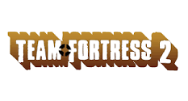
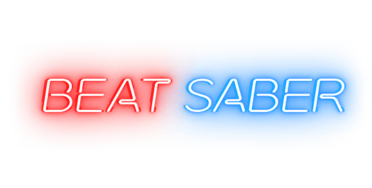

Voorwoord
Ik hoe van gamen, en ik heb ook favoriete games. Ik heb een top 3 gemaakt (in volgorde)
Overwatch 2
Overwatch 2 is een FPS (First-Person-Shooter), dit speel heeft veel verschillende characters om te spelen.
Een team heeft 5 personen, met verschillende rollen: Tank, Damage en Supports. in een team zit 1 Tank, 2 damages en 2 supports.
een character heeft altijd 2 "abilities", een bepaald aantal "Hp" (Health points), een wapen en een Ultieme ability.
een ability kunnen heel veel verschillen, het kan vliegen zijn of rennen, een laser schieten of bommen gooien.
De ability van een character passen altijd bij de character een zijn wapens
Health en wapens is heel simpel maar het wapen verschillen veel per character, meeste wapens zijn gewoon geweren.
Maar sommige zijn ook "Rail gun" (een laser geweer) of een character kan een wapen hebben die geen damage doet,
maar dat wapen "healed" teamgenoten alleen supports kunnen wapens hebben die healen.
de health van een character heeft veel invloed van hoe de character wordt gespeeld, character met veel HP (Meestal tanks)
kun je heel dicht bij de "enemies" staan. Maar character met weinig HP (meestal Damage) moet je wat verder weg staan of achter de "enemies"
De ultieme ability is een ability die lang moet laden deze ability kan je teamgenoten helpen.
De verschillen rollen hebben vaak Ultieme abilities die bij hun rol passen:
Tanks; meestal een grote damage, met een grote "range"
Damage; meestal een eigen damage boost, voor zelf meer damage te doen
Supports; meestal iets wat het team helpt
Team Fortress 2

Team Fortress 2 (TF2) is ook een schiet spel, maar dit spel heeft geen abilities en maar 9 classes.
TF2 focused meer op verschillende wapens voor bijzondere "playstyles" (een manier hoe je het spel speelt).
TF2 heeft 9 classes:
Scout
Soldier
Pyro
Demoman
Heavy
Engineer
Medic
Sniper
Spy
De 3 offense classes, zijn scout de snelste class van het spel met een shotgun als primary weapon.
De soldier met een raketwerper en de pyro met een vlammenwerper.
De 3 Defense, zijn de demoman met een granaatwerper, de heavy met een "minigun" en de engineer met een shotgun
, maar de engineer kan nog een turret maken die voor hem schiet.
De 3 support, de medic met de "Medigun" een wapen de teamgenoten healed, de sniper met een sniper en de spy met een revolver
en een vlinder mes.
In TF2 heb je ongeveer 6 gamemodes: Attack Defend (1team de attacked en 1 team die defend),
Control points (alle bij de teams attacken en defenden), Capture the flag (alle bij de teams moeten hun "intel" (de vlag) beschermen terwijl ze de "enemy" team vlag te pakken),
King of the Hill (zo lang mogelijk een points in controle hebben) en Payload (een cart duwen of defenden)
TF2 is ook een spel met zijn eigen economie. In TF2 kan je met echt geld "items" kopen (hoeden, wapens of iets voor de class),
maar door de economie heeft deze item een waarde. Dus dan kan de items weer verkocht worden voor echt geld.
In de economie wordt er betaalt met "keys" of met "ref", ze hebben hun eigen waarde. De keys zijn ongeveer de euros en de ref zijn de centen.
De waarde van deze twee items zijn: ongeveer 2 euro voor 1 key, een 0.03 cent voor 1 ref.
Sommige items in TF2 zijn heel duur, kan zo duur zijn als 13.000 euro. een mensen kunnen deze items kopen of verkopen met echt geld.
Er was een persoon die een auto had kunnen kopen door de economie.
Beat Saber

Beat saber is een VR spel waar je 2 soort "lightsabers" hebt waar je blokjes snijd op het ritme van een liedje.
in dit spel beweeg je veel en kan je wel wat calorie mee verbrandde.
Dit speel kan je "modden" (bestanden die er voor zorgen dat je meer heb in het spel). de meeste mods gaan over
"Custom" sabers, blocks of "fixes" om het spel beter te maken.
Met 1 mod die scoresaber heet, kan je je score opslaan en de score van andere mensen zien.
Er kan ook gezien worden hoe moeilijk een level is (dat is gemeten in sterren),
en de score word gemeten met Performance Points (PP).
De hoger Star de level is de meer Performance Points die je krijgt. Het moeilijkste level is 15 sterren, en ik kan
9 sterren level halen.